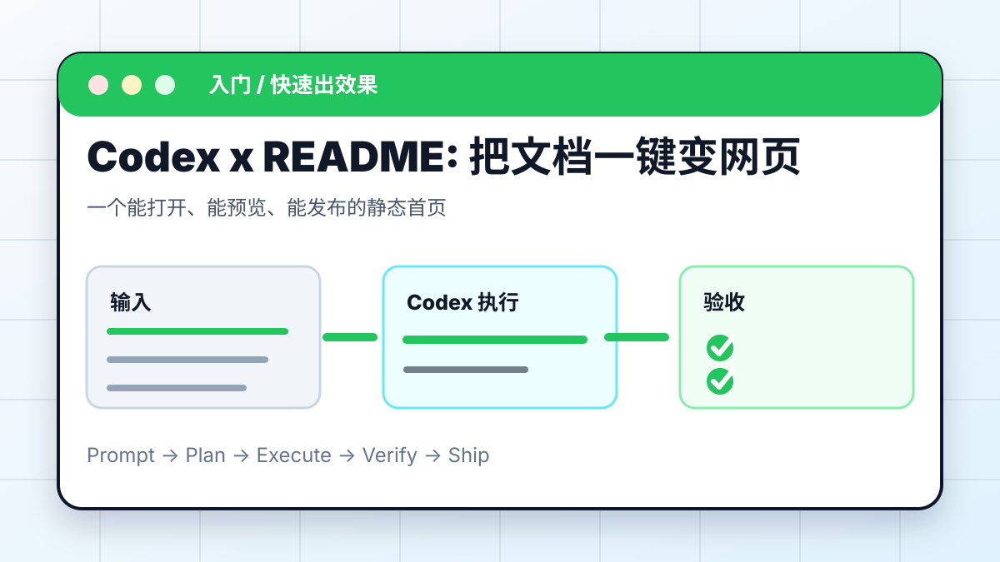
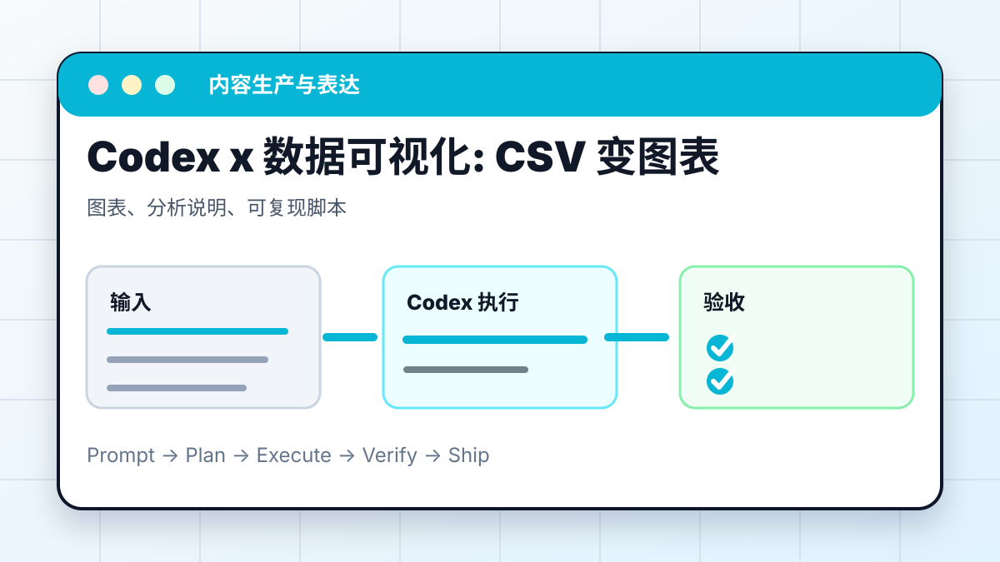
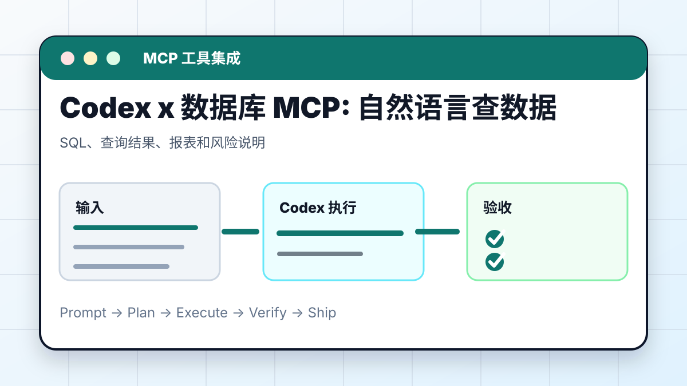
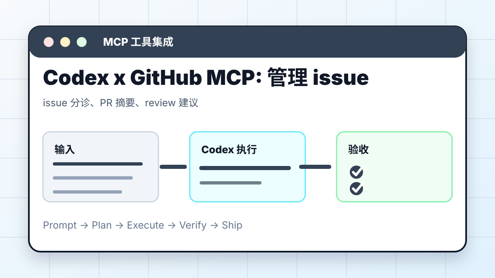
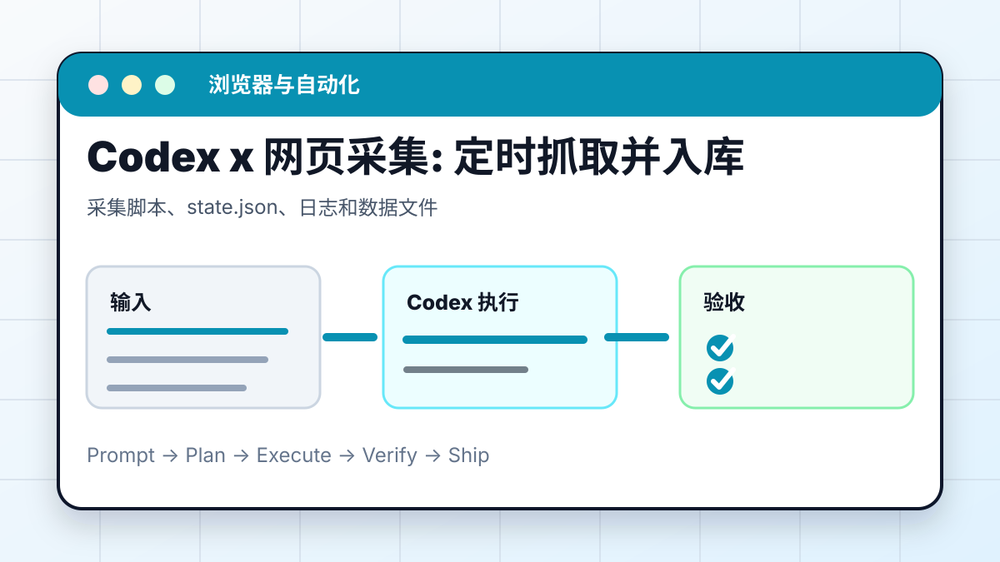
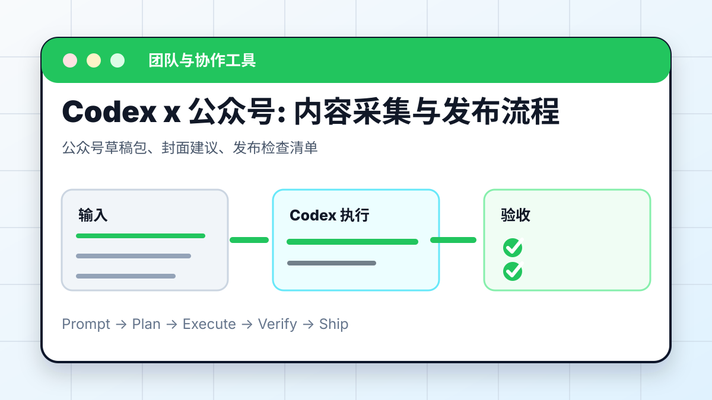
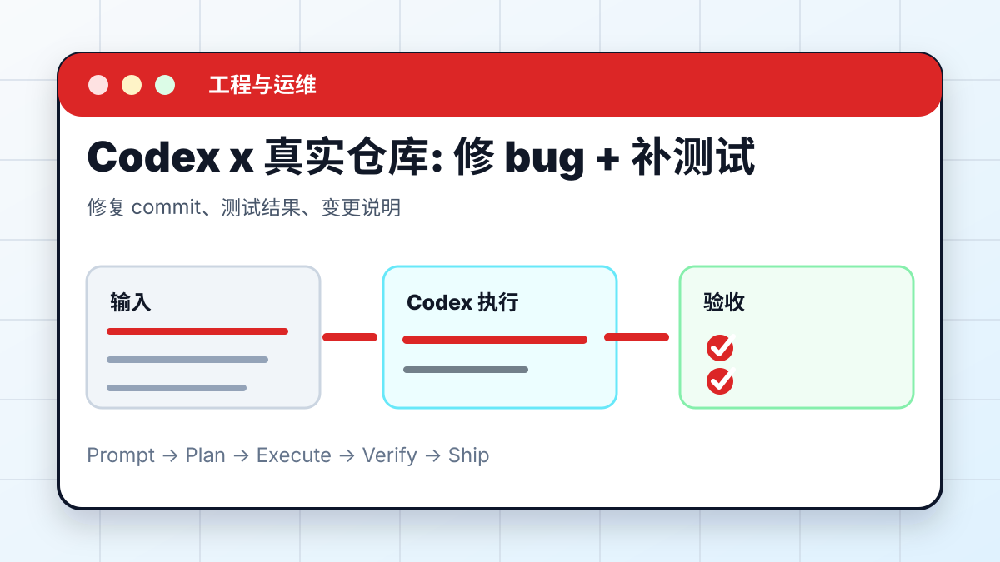
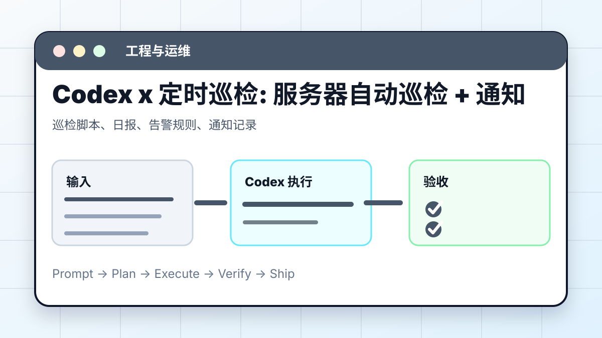
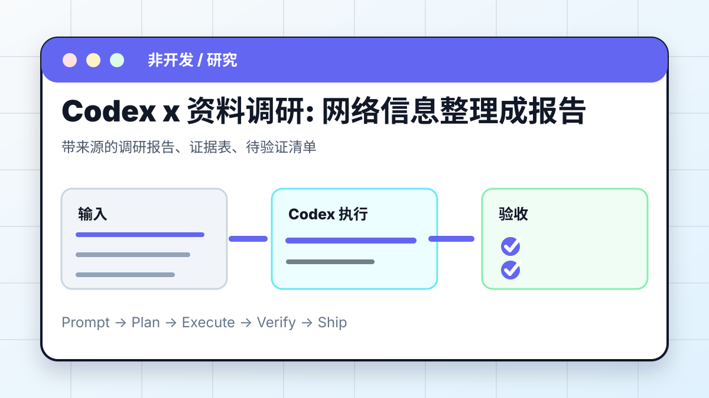

MaynorAI 图文实战
Codex 实战案例库
入口页解决“怎么买、怎么进、怎么配置”，案例库解决“进来以后能做什么”。这一版把 24 个案例补成图文教程：每篇都有场景图、准备输入、提示词、执行步骤、验收标准和风险提醒。
图文案例


每个案例都有场景图和验收清单

01 / 入门
README 变网页
静态首页。第一次看到 Codex 产出。
02 / 入门
静态网页部署
公网链接。把页面发给别人看。
03 / 内容
一句话生成 PPT
PPTX。课程、汇报、发布会。
04 / 内容
Draw.io 架构图
可编辑图表。系统和流程说明。

05 / 内容
CSV 变图表
图表和分析。数据趋势和异常。
06 / 内容
代码生成动画视频
MP4 / 网页动画。课程和短视频。
07 / 知识库
Obsidian 自动整理
结构化笔记。长期资料库。
08 / 知识库
AI Wiki
主题知识库。系统学习一个主题。
09 / 知识库
Notion MCP
Notion 页面。团队知识空间。
10 / MCP
Playwright MCP
浏览器截图。网页测试和检查。
11 / MCP
Figma MCP
设计稿解读。从设计到前端。

12 / MCP
数据库 MCP
SQL / 报表。自然语言查数据。

13 / MCP
GitHub MCP
issue / PR 管理。项目协作。
14 / 浏览器
Chrome 控制
登录态操作记录。使用个人浏览器状态。

15 / 浏览器
网页采集
采集脚本和日志。定时跟踪公开信息。
16 / 协作
飞书机器人
表格和通知。团队协作数据。

17 / 协作
公众号流程
草稿包。内容采集和排版。

18 / 工程
真实仓库修 bug
修复和测试。真实项目开发。
19 / 工程
云服务器修 Bug
排障记录。远程服务问题。
20 / 工程
GitHub Actions CI
CI 修复 PR。失败检查回绿。

21 / 运维
服务器巡检
巡检报告。重复运维检查。
22 / 移动
安卓远程操控
远程任务记录。手机跟进桌面任务。
23 / 研究
文献综述
证据表。论文和医学研究。

24 / 研究
资料调研报告
带来源报告。行业和竞品调研。
24 个案例
完整案例清单
| 编号 | 分类 | 案例 | 产出 | 适合场景 |
|---|---|---|---|---|
| 01 | 入门 | README 变网页 | 静态首页 | 第一次看到 Codex 产出 |
| 02 | 入门 | 静态网页部署 | 公网链接 | 把页面发给别人看 |
| 03 | 内容 | 一句话生成 PPT | PPTX | 课程、汇报、发布会 |
| 04 | 内容 | Draw.io 架构图 | 可编辑图表 | 系统和流程说明 |
| 05 | 内容 | CSV 变图表 | 图表和分析 | 数据趋势和异常 |
| 06 | 内容 | 代码生成动画视频 | MP4 / 网页动画 | 课程和短视频 |
| 07 | 知识库 | Obsidian 自动整理 | 结构化笔记 | 长期资料库 |
| 08 | 知识库 | AI Wiki | 主题知识库 | 系统学习一个主题 |
| 09 | 知识库 | Notion MCP | Notion 页面 | 团队知识空间 |
| 10 | MCP | Playwright MCP | 浏览器截图 | 网页测试和检查 |
| 11 | MCP | Figma MCP | 设计稿解读 | 从设计到前端 |
| 12 | MCP | 数据库 MCP | SQL / 报表 | 自然语言查数据 |
| 13 | MCP | GitHub MCP | issue / PR 管理 | 项目协作 |
| 14 | 浏览器 | Chrome 控制 | 登录态操作记录 | 使用个人浏览器状态 |
| 15 | 浏览器 | 网页采集 | 采集脚本和日志 | 定时跟踪公开信息 |
| 16 | 协作 | 飞书机器人 | 表格和通知 | 团队协作数据 |
| 17 | 协作 | 公众号流程 | 草稿包 | 内容采集和排版 |
| 18 | 工程 | 真实仓库修 bug | 修复和测试 | 真实项目开发 |
| 19 | 工程 | 云服务器修 Bug | 排障记录 | 远程服务问题 |
| 20 | 工程 | GitHub Actions CI | CI 修复 PR | 失败检查回绿 |
| 21 | 运维 | 服务器巡检 | 巡检报告 | 重复运维检查 |
| 22 | 移动 | 安卓远程操控 | 远程任务记录 | 手机跟进桌面任务 |
| 23 | 研究 | 文献综述 | 证据表 | 论文和医学研究 |
| 24 | 研究 | 资料调研报告 | 带来源报告 | 行业和竞品调研 |